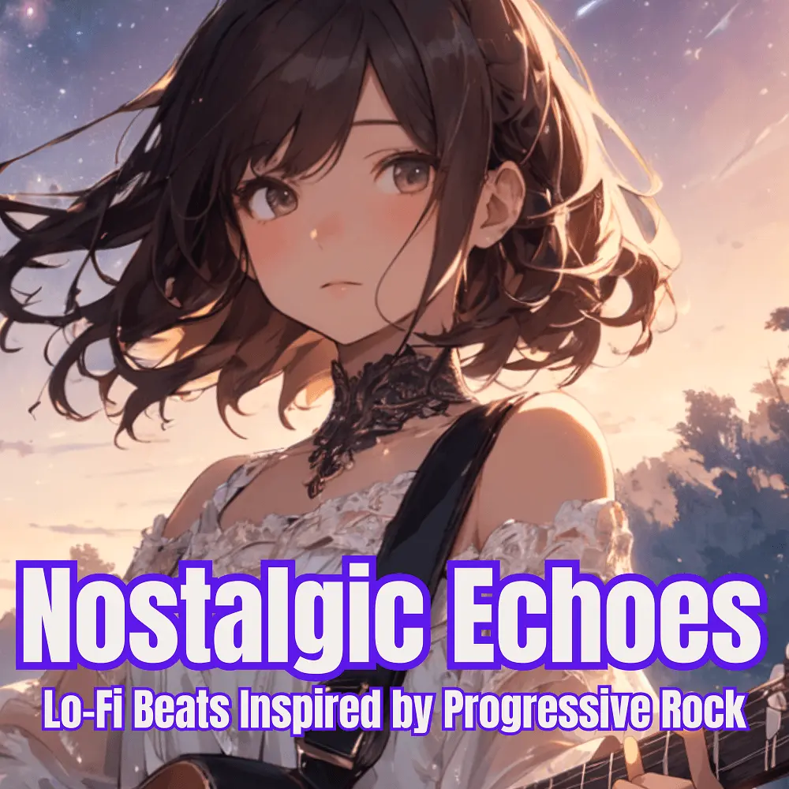

Lo-Fi
Nostalgic Echoes — Lo-Fi Beats Inspired by Progressive Rock
Nanashino-chan
Explore Nostalgic Echoes — Lo-Fi Beats Inspired by Progressive Rock by Nanashino-chan: 27 instrumental tracks spanning Lo-Fi. Start with Echoes of the Past / Dreaming Horizons, preview the collection and find your favorites on streaming services.
2025-05-16 · Released · 27 tracks · Instrumental
Preview the album
The jacket stays here until you choose a track. Playback uses YouTube.
YOUTUBE PREVIEW
Choose a track to listen
The jacket stays here until you choose a track. Playback uses YouTube.
If playback is unavailable, open the album or track on the streaming service.
Find this album on streaming services
Links marked “search” open search results. Select the album or track on the service.
Track list 27
- 01Echoes of the Past
- 02Dreaming Horizons
- 03Soft Reverie
- 04Twilight Reflections
- 05Distant Whispers
- 06Cosmic Drift
- 07Shimmering Shadows
- 08Time Traveler's Lullaby
- 09Echo Chamber
- 10Forgotten Worlds
- 11Silent Reverberations
- 12Celestial Waves
- 13Fading Memories
- 14Endless Sky
- 15Echoes of Serenity
- 16Tranquil Shores
- 17Lost in Thought
- 18Echoes of the Unknown
- 19Parallel Dreams
- 20Faint Echoes
- 21Solitude's Soundscap
- 22Melancholic Winds
- 23Endless Reflections
- 24Distant Dreams
- 25Time Echoes
- 26Forgotten Echoes
- 27Eternal Nostalgia
Find a sound for your next post
Copy “Nanashino-chan + track title” and paste it into your social app’s music search. Availability depends on your region and account. Copying the name does not grant usage rights.